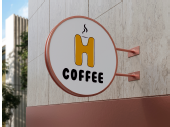
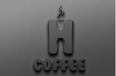
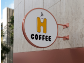
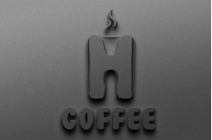

Proyecto 4
 



El diseño de marcas es uno de los aspectos más apasionantes de mi trabajo como diseñador gráfico, ya que involucra la creación de una identidad visual única y memorable para cada cliente. En este tipo de proyectos, mi objetivo es transformar la visión y los valores de la empresa en una representación gráfica que conecte con su público objetivo de manera efectiva.